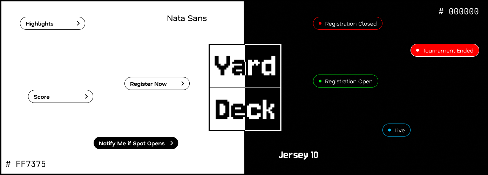
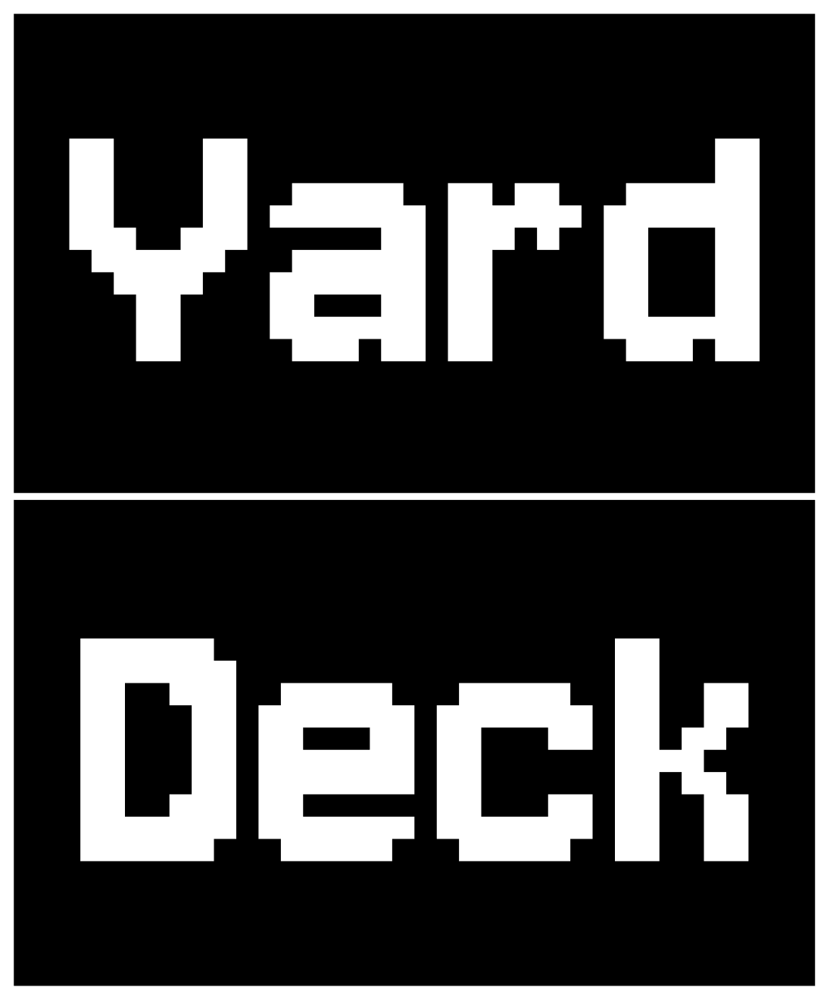
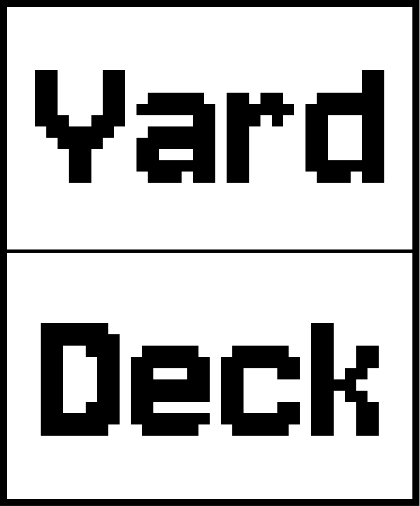
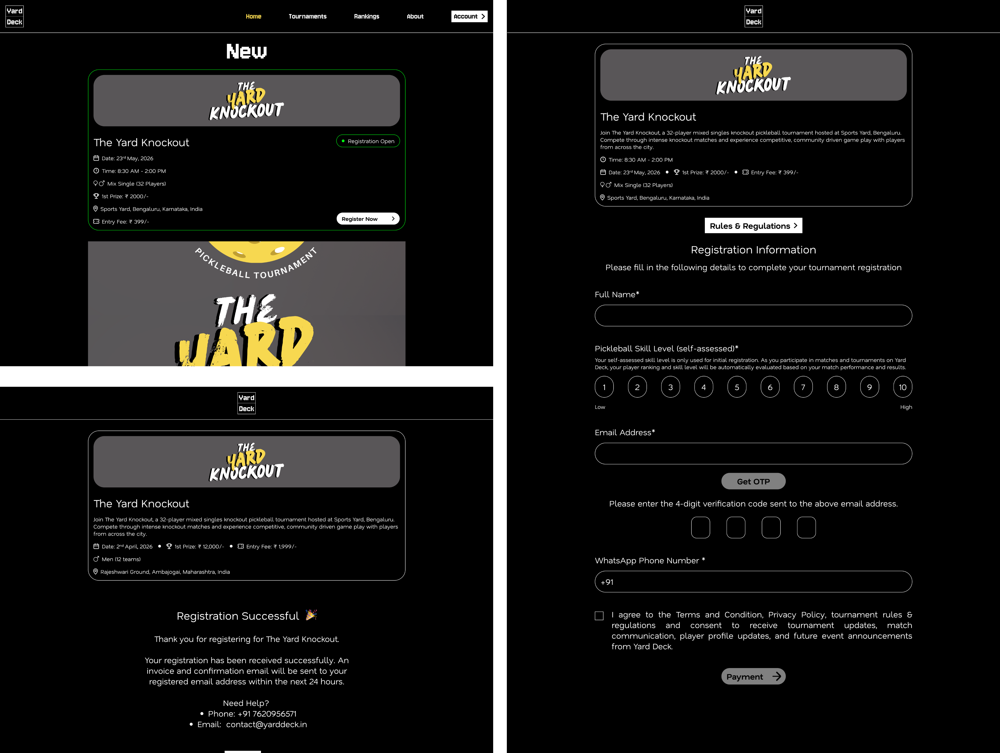

Make it competitive
Create a visual language that reflects court sports.
The identity needed to feel like the game
Create a visual language that reflects court sports.
Build a memorable identity beyond typical sports branding.
Ensure the identity works across website and events.
Use typography, colour, and status to communicate quickly.
Create an energetic identity without overwhelming users.
Visual identity system

Logo


Website

Connecting tournament registration with secure online payments.
Integrated Cashfree into the tournament registration flow, allowing participants to complete their entry fee payment online and connect payment status with the registration experience.
Yard Deck taught me how a visual identity can become part of a complete digital experience, from the logo and typography to the website and tournament registration flow.
Working across design and development also helped me understand how to balance visual direction, usability, and implementation when taking a product from 0→1.
A strong brand isn't just recognised. It's experienced.